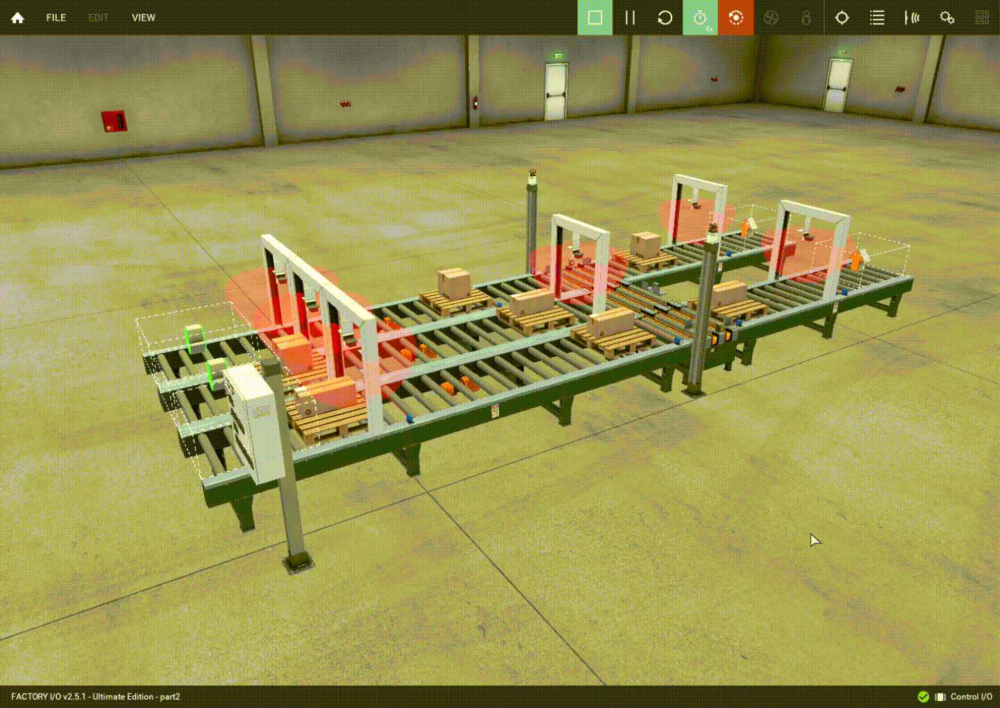

Home
Industrial Control Systems: Logic Bomb
Using Factory IO and Control IO, I modeled an industrial control system (ICS) and programmed logic bombs to simulate real-life cyber-physical threats.
Background
A fellow classmate, Johnny Offer, is looking for a new job in the U.S. after graduation. As it can be complicated to compare job offers with benefits, in different locations, and other aspects beyond salary, he would like an app to help with this process and has asked for your assistance in creating a simple, single-user job offer comparison app.
Requirements
A detailed list of requirements can be found in this document.
Implementation
This project traversed across every stage of the software development lifecycle (SDLC), from planning to deployment.
Role
- Project Manager: Responsible for submitting deliverables, scheduling meetings, and tracking dependencies.
- Full Stack Developer: Responsible for implementing frontend/backend functionality related to SQLite and Adjust Comparison Settings.
Key Activities/Deliverables
- Requirements Discussion: Brainstorming notes defining the requirements.
- UML: Key component of the app design that mapped out classes, attributes, and relationships.
- Design Document: High level description of the app dependencies, functionality, and components.
- Project Plan: Overview of the project tasks and completion dependencies.
- Test Plan: Testing methodology, test cases, and results.
- Use Case Model: Clearly defined use cases to help in the development of the app.
- User Manual: Reference material for the end-user to understand app functionality.
- Functioning Application: The app was delivered as an Android Studio project that met all the requirements and contained no known bugs.
Key Features
- Android SQLite: Leveraged Android SQLite to store jobs and comparison settings on mobile device. The application is tested in a clean-checkout state and with a new or cleared AVD to ensure a special environment is not needed to run the app.
- JUnit Testing Framework: Wrote and executed repeatable automation tests to validate input fields, calculations, and other requirements.
- EditText: Utilized EditText feature to enable user to enter details of the job information.
- ScrollView: Utilized ScrollView feature to enable user seamless navigation on variety of devices.
- Customized Comparison: Customized comparison class to enable comparing job offers based on input weights and offer details.
Logic Bomb Demonstrations
Scene 1

Scene 2

Scene 3